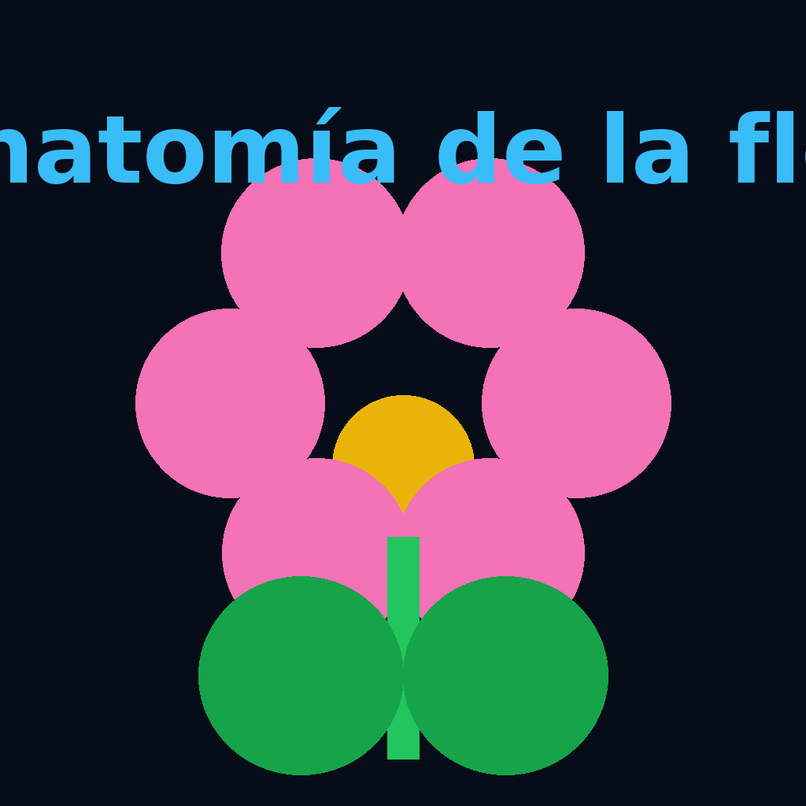

Explora una flor completa por dentro: sépalos, pétalos, estambres y carpelos en un flujo XR pensado
para estudiantes de Enseñanza Media, PIE y curiosos de la botánica.

Representación artística de una flor completa. El modelo 3D adjunto permite observar con detalle la posición
de cada órgano reproductor.
🌱 ¿Qué es una flor?
La flor es el órgano reproductor característico de las plantas angiospermas. En una flor típica distinguimos
cuatro verticilos o "anillos" dispuestos de afuera hacia adentro:
La flor es la parte de la planta donde se forman las semillas. Tiene capas como un “sándwich”: primero los sépalos,
luego los pétalos y al centro las partes que producen polen y óvulos.
Cáliz (sépalos): piezas generalmente verdes que protegen al botón floral.
Corola (pétalos): piezas de colores llamativos que ayudan a atraer polinizadores.
Androceo (estambres): conjunto de órganos reproductores masculinos que producen polen.
Gineceo (carpelos o pistilo): órgano reproductor femenino que contiene los óvulos.
Cuando una flor posee los cuatro verticilos se dice que es una flor completa. En cambio, si
falta alguno de ellos se considera una flor incompleta. Además, si presenta estambres y carpelos
en la misma flor es perfecta o hermafrodita; si sólo posee estructuras masculinas o femeninas,
se denomina imperfecta o unisexual.
🔍 Partes principales en el modelo 3D
Pedúnculo y receptáculo: sostienen la flor y sirven de base para los demás órganos.
Sépalos: rodean la base de la flor, protegiendo el botón floral.
Pétalos: pueden formar patrones de color que guían a los polinizadores hacia el néctar.
Estambre: formado por filamento (soporte) y antera (saco donde se forma el polen).
Pistilo o carpelo: incluye estigma (recibe el polen), estilo (conduce el tubo polínico)
y ovario (contiene los óvulos).
Nectarios: estructuras productoras de néctar que refuerzan la relación con polinizadores.
🧠 KPSI · ¿Qué sé sobre la flor?
Antes y después de la experiencia XR, el estudiantado puede autoevaluar su nivel de manejo:
Enunciado
No sé
Lo he escuchado
Lo entiendo
Lo podría explicar
Identifico en un dibujo sépalos, pétalos, estambres y pistilo.
⬜
⬜
⬜
⬜
Distingo estructuras masculinas y femeninas en una flor.
⬜
⬜
⬜
⬜
Relaciono cada parte de la flor con su función en la reproducción.
⬜
⬜
⬜
⬜
Explico por qué algunas flores son completas y otras incompletas.
⬜
⬜
⬜
⬜
Puedes adaptar la KPSI para estudiantes PIE usando pictogramas, colores o escala de caritas.
📚 Glosario básico de anatomía floral
Óvulo: estructura que, tras la fecundación, dará origen a la semilla.
Fruto: órgano que se forma a partir del ovario fecundado y protege a las semillas.
Polinización: traslado del polen desde la antera hasta el estigma.
Fecundación: unión del gameto masculino con el femenino dentro del óvulo.
Inflorescencia: agrupación de varias flores sobre un mismo eje o rama.
✅ Flujo de trabajo sugerido
Aplicar la KPSI y revisar brevemente las partes de la flor con imágenes 2D.
Explorar el modelo 3D en computador (rotar, hacer zoom, ocultar partes según la guía).
Pasar a AR/VR para estudiantes que necesiten apoyo visual espacial o motivacional extra.
Completar una guía donde asocian cada parte con su función y colorean un esquema.
Responder el quiz y ticket de salida para evidenciar comprensión.
👁️ Vista 3D📱 AR en el aula🥽 VR guiada✅ KPSI inicio / fin🧪 Quiz🎟️ Ticket de salida
🧪 Quiz rápido (autocorregible)
🎟️ Ticket de salida
Escribe el nombre de una parte de la flor que antes no conocías y cuál es su función.
Completa: "La flor es importante para la planta porque..."
Dibuja una flecha que marque el recorrido del polen desde la antera hasta el óvulo.
📊 Plantilla de datos de la flor
El archivo anatomia_flor_partes.csv resume la cantidad de sépalos, pétalos, estambres y carpelos
de una flor modelo. Puedes modificar los valores, agregar otras especies y usar el Dashboard
para comparar estructuras.